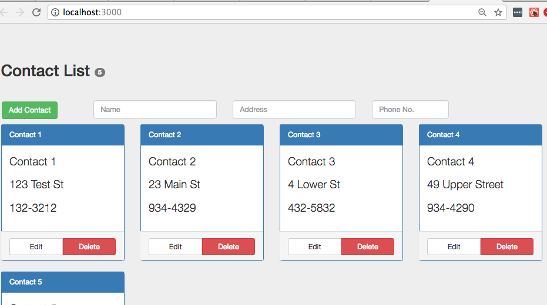
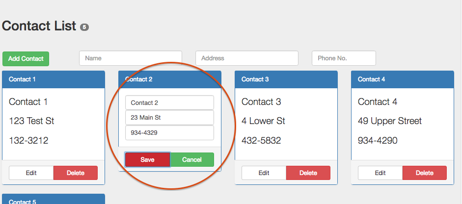
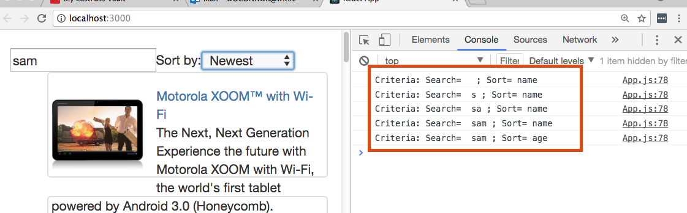
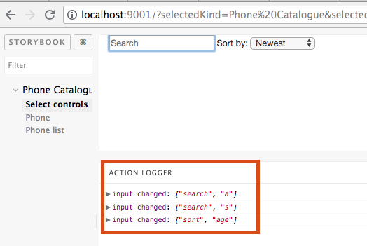
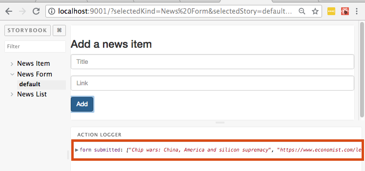

Continue the development of the three SPAs by adding statefulness and making them interactive and dynamic.
Use the code developed in the previous lab (the threeApps folder) as the starting point for this one.
The objective is to allow the user edit or delete an existing contact, with the option to undo / cancel the operation, if required. We also want to enable the addition of new contacts to the list.
In production mode a SPA gets its model data from a 'real' web API. However, during development a stub API is a common technique, either because the API is not yet developed or to postpone integration until the SPA is complete.
Create the file contactlist/src/dataStore/stubAPI.js and add the following code:
import _ from 'lodash';
class StubAPI {
constructor() {
this.contacts = [
{
'name': 'Contact 1',
'address': '123 Test St',
'phone_number': '132-3212'
},
{
'name': 'Contact 2',
'address': '23 Main St',
'phone_number': '934-4329'
},
{
'name': 'Contact 3',
'address': '4 Lower St',
'phone_number': '432-5832'
},
{
'name': 'Contact 4',
'address': '49 Upper Street',
'phone_number': '934-4290'
},
{
'name': 'Contact 5',
'address': '4 High Street',
'phone_number': '933-3390'
}
] ;
}
delete(k) {
let elements = _.remove(this.contacts,
(contact) => contact.phone_number === k
);
return elements;
}
getAll() {
return this.contacts ;
}
add(n,a,p) {
let len = this.contacts.length ;
let newLen = this.contacts.push({
name: n, address : a, phone_number: p }) ;
return newLen > len ;
}
update(key,n,a,p) {
let index = _.findIndex(this.contacts,
(contact) => contact.phone_number === key
);
if (index !== -1) {
this.contacts.splice(index, 1,
{name: n, address: a, phone_number: p});
return true ;
}
return false ;
}
}
export default (new StubAPI() );This code uses the lodash utility package. To install it, in the terminal window go to the contactList folder and type:
$ npm install lodash@2.4.2 --save[This installs the package in node_modules and updates (--save) the local package.json file.]
Start the development server from the contactlist folder:
$ npm startIn contactlist/src/App.js, the App component should now get the sample model data from the stub API. Replace the entire content of the file with the following:
import React , { Component } from 'react';
import './App.css';
import Header from './components/header'
import ContactForm from './components/contactForm'
import ContactList from './components/contactList'
import api from './dataStore/stubAPI' // NEW
class App extends Component {
render() {
let contacts = api.getAll() ; // NEW
return (
<div className="jumbotron">
<Header noContacts={contacts.length} />
<ContactForm />
<ContactList contacts={contacts} />
</div>
);
}
}
export default App;The app should now render in the browser as before.

From the contactlist folder update the local Git repo:
$ git add -A
$ git commit -m "Added stub API"Restart the development server.
In React terms, a common source of UI state is user input controls, including:
An analysis of this app's behavior requirements gives the following UI state breakdown:
Which components should manage the app's UI state?
Only the Contact component is concerned about the status attribute. Also, no other component needs to be re-rendered while the user is editing/updating a contact. The web Form component can manage the new contact's details while they are being entered. When the user submits the data it is only then the App components needs to be informed.
In src/components/contact.js, change the Contact component as shown below:
class Contact extends Component {
state = {
status : '',
name: this.props.contact.name,
address: this.props.contact.address,
phone_number: this.props.contact.phone_number,
previousDetails: {
name: this.props.contact.name,
address: this.props.contact.address,
phone_number: this.props.contact.phone_number
}
};
render() {
. . . as before . . .
}
}Notes:
The attributes (color, label) of the buttons associated with a contact could be considered configuration data. It is good practice to separate configuration from logic, thus making an app easier to reconfigure. Create the file src/config/buttonsConfig.js and add the following code:
let buttons = {
normal : {
leftButtonVal : 'Edit',
rightButtonVal : 'Delete',
leftButtonColor : 'btn-default',
rightButtonColor : 'btn-danger'
},
delete : {
leftButtonVal : 'Undo' ,
rightButtonVal : 'Confirm' ,
leftButtonColor : 'btn-success',
rightButtonColor : 'btn-danger'
},
edit : {
leftButtonVal : 'Save' ,
rightButtonVal : 'Cancel' ,
leftButtonColor : 'btn-danger',
rightButtonColor : 'btn-success'
}
}
export default buttons;This configuration data is used in the next section.
We will start by adding support for a contact's Edit button. The code will involve the following:
Significant changes are required to components/contact.js. Update its content as detailed below:
. . . . other imports . . . .
import buttons from '../config/buttonsConfig';
import _ from 'lodash';
import api from '../dataStore/stubAPI'
class Contact extends Component {
state = { . . . as before . . . };
handleEdit = () => this.setState({ status : 'edit'} );
handleSave = (e) => null ; // Implemented later
handleCancel = () => {
let {name, address, phone_number} = this.state.previousDetails ;
this.setState({ status : '',
name, address, phone_number } ) ;
};
handleNameChange = (e) => this.setState({name: e.target.value});
handleAddressChange = (e) => this.setState({address: e.target.value});
handlePhoneNumChange = (e) =>
this.setState({phone_number: e.target.value});
render() {
let activeButtons = buttons.normal ;
let leftButtonHandler = this.handleEdit;
let rightButtonHandler = this.handleDelete;
if (this.state.status === 'edit' ) {
activeButtons = buttons.edit ;
leftButtonHandler = this.handleSave;
rightButtonHandler = this.handleCancel ;
}
return (
<div className="col-sm-3" >
<div className="panel panel-primary">
<div className="panel-heading">
{ this.state.name }
</div>
<div className="panel-body">
{ this.state.status === 'edit' ?
[
<input type="text" className="form-control"
value={this.state.name}
onChange={this.handleNameChange} />,
<input type="text" className="form-control"
value={this.state.address}
onChange={this.handleAddressChange} />,
<input type="text" className="form-control"
value={this.state.phone_number}
onChange={this.handlePhoneNumChange} />
] :
[
<p key={'name'}>{this.state.name}</p>,
<p key={'address'} >{this.state.address}</p>,
<p key={'phone_number'} >{this.state.phone_number}</p>,
]
}
</div>
<div className="panel-footer">
<div className="btn-group btn-group-justified" role="group" aria-label="...">
<div className="btn-group" role="group">
<button type="button"
className={'btn ' + activeButtons.leftButtonColor}
onClick={leftButtonHandler} >
{activeButtons.leftButtonVal}
</button>
</div>
<div className="btn-group" role="group">
<button type="button"
className={'btn ' + activeButtons.rightButtonColor}
onClick={rightButtonHandler} >
{activeButtons.rightButtonVal}
</button>
</div>
</div>
</div>
</div>
</div>
) ;
}
}
export default Contact;Notes:
To test the above code, click the Edit button of any contact.

The contact's details are now editable. Change some values (say, address) and click Cancel to reset it.
To get save working, implement the handleSave, as follows:
class Contact extends Component {
. . . . . .
handleSave = (e) => {
e.preventDefault();
let updatedName = this.state.name.trim();
let updatedAddress = this.state.address.trim();
let updatedPhone_number = this.state.phone_number.trim();
if (!updatedName || !updatedAddress || !updatedPhone_number ) {
return ;
}
let {name, address, phone_number} = this.state ;
this.setState({status : '',
previousDetails: { name, address, phone_number }
})
api.update( this.state.previousDetails.phone_number,
updatedName , updatedAddress, updatedPhone_number )
};
handleCancel = (e) => { . . . as before . . . }Now try editing a contact and saving the changes.
To implement the Delete contact feature we need to follow the inverse data flow design pattern. For a Delete action the Contact component must request the App component to complete the delete, via the stub API. The App then re-renders itself to ensure the 'number of contacts' badge is updated. The elements of the inverse data flow pattern includes:
[ The re-rendering by the App component does lead to some unnecessary re-rendering by the Contact components. We will remove this unnecessary execution later.]
In src/App.js, make the following changes:
.
.
.
class App extends Component {
deleteContact = (key) => {
api.delete(key);
this.setState({});
};
render() {
. . . . as before . . .
return (
. . . as before . . .
<ContactList contacts={contacts}
deleteHandler={this.deleteContact} />
. . . as before . . .
);
}
}
export default App;In components/contactList.js make the following changes:
export default class ContactList extends Component {
render() {
let contactPanels = this.props.contacts.map(
(c) => <Contact key={c.phone_number} contact={c}
deleteHandler={this.props.deleteHandler} />
);
return (
. . . . as before . . . .
) ;
}
}The final change is to complete the data flow pattern, in components/contact.js:
. . . . . .
class Contact extends Component {
. . . . other handlers . . . .
handleDelete = () => this.setState({ status : 'del'} );
handleConfirm = (e) => {
e.preventDefault();
this.props.deleteHandler(this.state.phone_number);
};
render() {
. . . . . . .
if (this.state.status === 'edit' ) {
. . . as before . . .
} else if (this.state.status === 'del' ) {
activeButtons = buttons.delete ;
leftButtonHandler = this.handleCancel ;
rightButtonHandler = this.handleConfirm;
}
return ( . . . as before . . . )
}
export default Contact;Note, for convenience we are using a contact's phone number as a unique key/ identifier. In the browser, test the Delete feature.
From the threeApps/contactlist folder commit this work:
$ git add -A
$ git commit -m "Edit and Delete features completed"The mini web form to add a new contact is the remaining feature. The inverse data flow pattern applies here also, in that we need:
In src/App.js make the following changes:
. . . . imports . . . .
class App extends Component {
addContact = (n, a, p) => {
api.add(n,a,p) ;
this.setState({});
};
deleteContact = ..... as before .....and in the render method of the same component, pass this new function to the form component:
. . . . ..
<ContactForm addHandler={this.addContact} />
. . . . . . In a React app, data entry fields must be managed by your code (for HTML-based forms the browser DOM does it). The approach is to store a field's value in state and update it on every key press. In components/contactForm.js replace the entire code with the following:
import React , { Component } from 'react';
class ContactForm extends Component {
state = { name: '', address: '', phone_number : ''};
handleSubmit = (e) => {
e.preventDefault();
let name = this.state.name.trim();
let address = this.state.address.trim();
let phone_number = this.state.phone_number.trim();
if (!name || !address || !phone_number) {
return;
}
this.props.addHandler(name,address,phone_number);
this.setState({name: '', address: '', phone_number: ''});
}
handleNameChange = (e) => this.setState({name: e.target.value});
handleAddressChange = (e) => this.setState({address: e.target.value});
handlePhoneNumChange = (e) => this.setState({phone_number: e.target.value});
render() {
return (
<div className="container-fluid">
<div className="row">
<div className="col-sm-2" >
<button type="button" className="btn btn-success"
onClick={this.handleSubmit} >Add Contact</button>
</div>
<div className="col-sm-3" >
<input type="text" className="form-control"
placeholder="Name"
value={this.state.name}
onChange={this.handleNameChange}
/>
</div>
<div className="col-sm-3" >
<input type="text" className="form-control"
placeholder="Address"
value={this.state.address}
onChange={this.handleAddressChange}
/>
</div>
<div className="col-sm-2" >
<input type="text" className="form-control"
placeholder="Phone No."
value={this.state.phone_number}
onChange={this.handlePhoneNumChange}
/>
</div>
</div>
</div>
);
}
}
export default ContactForm;In the browser, test the feature works.
On completion, commit the work:
$ git add -A
$ git commit -m "Add contact completed"In this app when the user enters text in the search field it should display only those phones whose name contains the entered text. Also, the order of the list of matching phones should change when the drop-down menu options is changed.
From threeApps/phonecatalogue folder, install the lodash package:
$ npm install lodash@2.4.2 --saveStart the development server:
$ npm start The UI state for this application consists of:
Both the SelectControls and App components need to know the current search text value. SelectControls uses it to set the text input field value, while App uses it to compute the matching subset of phones. As App is higher up the component hierarchy, it should manage this state value. The same argument can be made for the sort drop-down menu selection.
In phonesCatalogue/src/App.js, add a state object, as follows:
class App extends Component {
state = { search: '', sort: 'name' };
render() {
. . . as before . . .
}
}We need to implement inverse data flow between the App and SelectControls components. In src/components/selectControls/index.js, completely replace its content with the following code:
import React, { Component } from 'react';
export default class SelectControls extends Component {
handleChange = (e, type, value) => {
e.preventDefault();
this.props.onUserInput(type, value);
};
handleTextChange = (e) => {
this.handleChange( e, 'search', e.target.value);
};
handleSortChange = (e) => {
this.handleChange(e, 'sort', e.target.value);
};
render() {
return (
<div className="col-md-10">
<input type="text" placeholder="Search"
value={this.props.filterText}
onChange={this.handleTextChange} />
<span> Sort by: </span>
<select id="sort" value={this.props.order }
onChange={this.handleSortChange} >
<option value="name">Alphabetical</option>
<option value="age">Newest</option>
</select>
</div>
);
}
}Note, the handlerChange function calls a props function (not yet defined) belonging to the App component. The App function updates the state object, re-computation of the matching phone list, and forces a re-rendering. Make the following changes to src/App.js:
class App extends React.Component {
state = { . . . as before . . . };
handleChange = (type, value) => {
type === 'search' ?
this.setState( { search: value } ) :
this.setState( { sort: value } ) ;
};
render() {
console.log(
`Criteria: Search= ${this.state.search} ; Sort= ${this.state.sort}`);
let filteredList = Phones ; // Incomplete
return (
<div className="jumbotron">
<div className="container-fluid">
<div className="row">
<div className="col-md-10">
<h2>Phone Catalogue App</h2>
</div>
<SelectControls onUserInput={this.handleChange }
filterText={this.state.search}
sort={this.state.sort} />
<PhoneList phones={filteredList} />
</div>
</div>
</div>
);
}
}This code is incomplete because the subset of matching phones is not being recomputed, however, the console.log() statement in the render method allows us verify the 'inverse data flow' is working. To prove it, in the browser, open the Chrome developer tools. Now type 'sam' in the search text field and select 'Newest' in the sort dropdown. The screenshot below shows the console output.

In src/App.js, add the import at the top:
import _ from 'lodash';and update the App component's render method, as shown:
render() {
let list = Phones.filter(
(p) =>
p.name.toLowerCase().search(this.state.search.toLowerCase()) !== -1
);
let filteredList = _.sortBy(list, this.state.sort) ;
return ( . . . as before . . . );
}The features used above include:
In the browser check the app is fully-functional by using the search text and drop-down menu inputs.
Storybook can accommodate components that expect a function prop by providing a stub replacement. We use an addon to implement the stub. Add the following line to the configuration file .storybook/addons.js:
import '@storybook/addon-actions/register'; In stories/phoneApp.js add a new import at the top:
import { action } from '@storybook/addon-actions';and update the related story:
storiesOf('Phone Catalogue', module)
.add('Select controls',
() => <SelectControls
onUserInput={ action('input changed') }
filterText='' />
)
.add('Phone', . . . . as before . . . . We are passing a dummy function (or action ) to the SelectControls component. The dummy will simply display a message ('input changed') when invoked. Start the server:
$ npx start-storybook -s ./public -p 9001 -c .storybookBrowse to http://localhost:9001/ , select the story, and in the component change the drop-down menu selection and type in the search field. Confirmation of the dummy function calls can be seen in the 'Action Logger' panel.

see here for a full list of Storybook addons.
Commit these changes to git:
$ git add -A
$ git commit -m "Search page completed"From threeApps/hackerNews, install the lodash packages:
$ npm install lodash@2.4.2 --saveFrom the same folder start the server:
$ npm start Again we will use a stub API as the model data source. Create the file hackerNews/src/dataStore/stubAPI.js and paste in the following code:
import _ from 'lodash';
class StubAPI {
constructor() {
this.posts = [
{ id: 1 ,
title : 'India - Tiger population sees 30% increase.',
link : 'http://www.bbc.com/news/world-asia-30896028',
username : 'jbloggs',
comments : [],
upvotes : 10
},
{
id: 2,
title : 'The button that is not.',
link : 'http://blog.nuclearsecrecy.com/2014/12/15/button-isnt/',
username : 'notme',
comments : [],
upvotes : 12
},
{
id: 3,
title : 'Google Nears $1B Investment in SpaceX',
link : null,
username : 'notme',
comments : [],
upvotes : 12
},
{
id: 4,
title : 'Coinbase Raises $75M from DFJ Growth, USAA, and More',
link : 'http://blog.coinbase.com/post/108642362357/coinbase-raises-75m-from-dfj-growth-usaa-nyse',
username : 'psmith',
comments : [],
upvotes : 2
}
] ;
}
getAll() {
return this.posts ;
}
add(title, link) {
let id = 1 ;
let last = _.last(this.posts) ;
if (last) {
id = last.id + 1 ;
}
let len = this.posts.length ;
let newLen = this.posts.push({
id, title, link,
username: '',
comments: [],
upvotes: 0 }) ;
return newLen > len ;
}
upvote(id) {
let index = _.findIndex(this.posts,
(post) => post.id === id
);
if (index !== -1) {
this.posts[index].upvotes += 1 ;
return true ;
}
return false ;
}
getPost(id) {
let index = _.findIndex(this.posts,
(post) => post.id === id
)
let result = index !== -1 ?
this.posts[index] :
null ;
return result;
}
addComment(postId,c,n) {
let post = this.getPost(postId ) ;
let id = 1 ;
let last = _.last(post.comments) ;
if (last) {
id = last.id + 1 ;
}
post.comments.push({ 'id': id,
comment: c , author: n, upvotes: 0 } ) ;
}
upvoteComment(postId,commentId) {
let post = this.getPost(postId ) ;
let index = _.findIndex(post.comments,
(c) => c.id === commentId
);
if (index !== -1) {
post.comments[index].upvotes += 1 ;
}
}
}
export default (new StubAPI() );Note: An id has been added to each post (news item) object for convenience. The add method of the API computes the id of a new post by simply adding 1 to the id of the last one in the array. The upvote method is passed the id of the post to be upvoted.
In src/App.js completely replace the current code with the following:
import React, { Component } from 'react';
import NewsList from './components/newsList';
import Form from './components/newsForm';
import api from './dataStore/stubAPI';
export default class App extends Component {
render() {
let posts = api.getAll();
return (
<div className="jumbotron">
<div className="container-fluid">
<div className="row">
<div className="col-md-9 col-md-offset-3" >
<a href="/"><h1>Hacker News</h1></a>
</div>
</div>
</div>
<div className="container">
<div className="row">
<div className="col-md-9 col-md-offset-1">
<NewsList posts={posts} />
<Form />
</div>
</div>
</div>
</div>
);
}
}The browser should render the news items as before.
We will add the upvoting feature first. In src/App.js add a new function:
export default class App extends Component {
incrementUpvote = (id) => {
api.upvote(id) ;
this.setState({});
};
render() {
. . . . . .
<NewsList posts={posts}
upvoteHandler={this.incrementUpvote} />
. . . . . .
}This function is called when the user clicks a thumb-up glyph. Therefore it must be passed down the component hierarchy to NewsItem. In components/newsList/index.js, update the NewsItem set of props:
render() {
let items = this.props.posts.map(
(post,index) =>
<NewsItem key={index}
post={post}
upvoteHandler={this.props.upvoteHandler} />
);
return ( . . . as before . . )In components/newsItwm/index.js, add the onClick handler:
export default class NewsItem extends Component {
handleVote = () => this.props.upvoteHandler(this.props.post.id);
render() {
. . . . . .
return (
. . . . .
<span className="glyphicon glyphicon-thumbs-up ptr"
onClick={this.handleVote}/>
{this.props.post.upvotes}
. . . . . . . . In the browser you should now be able to increment a news item's upvote count. We also want the items to be in descending order, by vote count. In src/App.js compute the order in the render method:
. . . . imports . . .
import _ from 'lodash';
. . . . . . .
render() {
let posts = _.sortBy(api.getAll(),
(post) => - post.upvotes
);
return (
. . . as before . . In the browser upvote an item a few times to force a reordering.
From the threeApps/hackerNews folder, commit the work so far:
$ git add -A
$ git commit -m "Upvote feature completed"The add news item feature is very similar to the add contact feature in the Contact List app. We need the following:
In src/App.js make the following changes:
export default class App extends Component {
addNewsItem = (title,link) => {
api.add(title,link)
this.setState({})
}
incrementUpvote = (id) => { . . . as before }and in the render method change the Form tag:
<Form handleAdd={ this.addNewsItem } />You are required to complete the implementation. The code that needs modifying is components/newsForm/index.js - use the Add contact form from the Contact List App as a guide.
For completeness we should update the Storybook code for the NewsForm component/
In .storybook/addons.js register the addon-action plugin:
import '@storybook/addon-actions/register';In stories/hackerApp.js import the plugin:
import { action } from '@storybook/addon-actions';You are required to update the effected story in stories/hackerApp.js.
When completed, start the Storybook server and test it in the browser. Fill out the form and click the Add button. The screenshot shows a sample result.

On completion, go to the hackerNews folder and commit the work:
$ git add -A
$ git commit -m "Add news item feature completed"